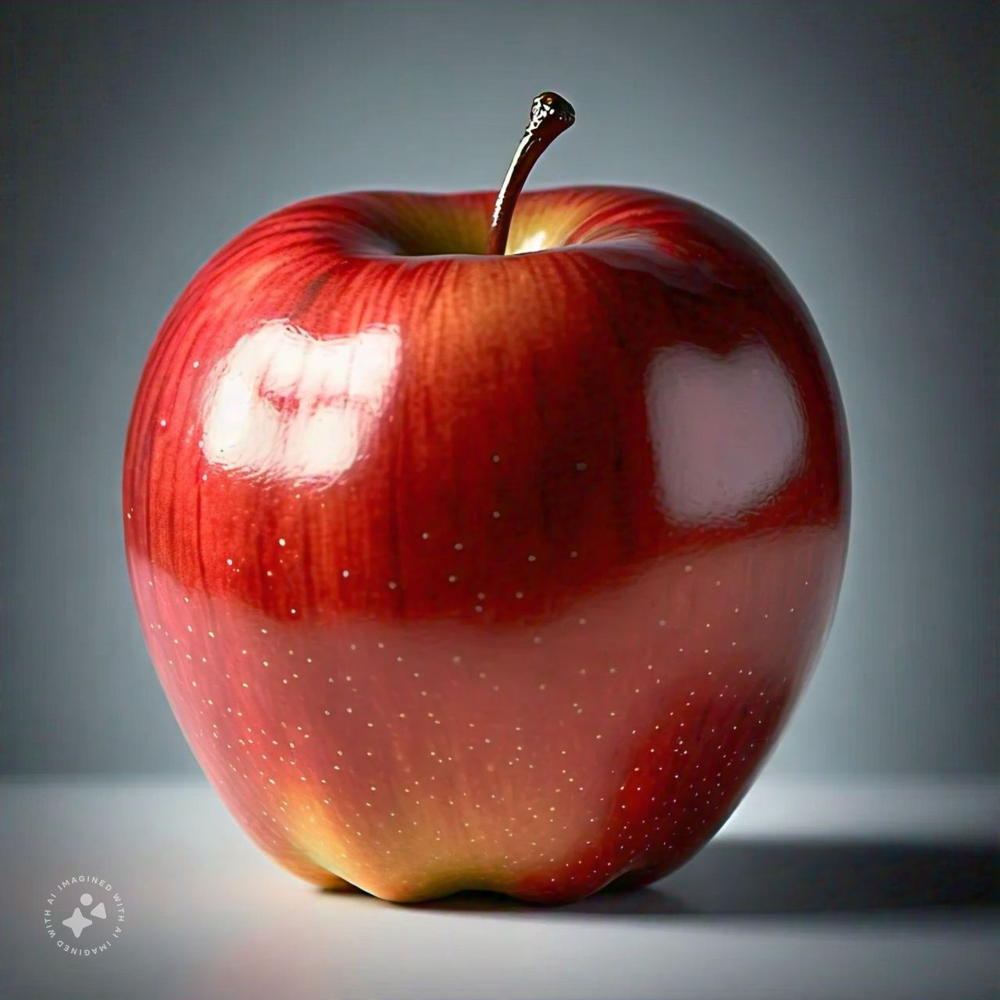
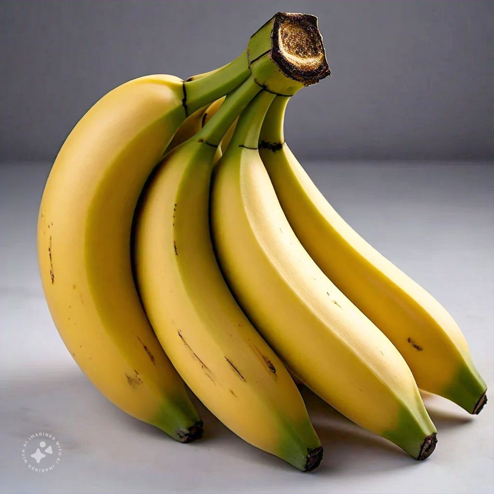
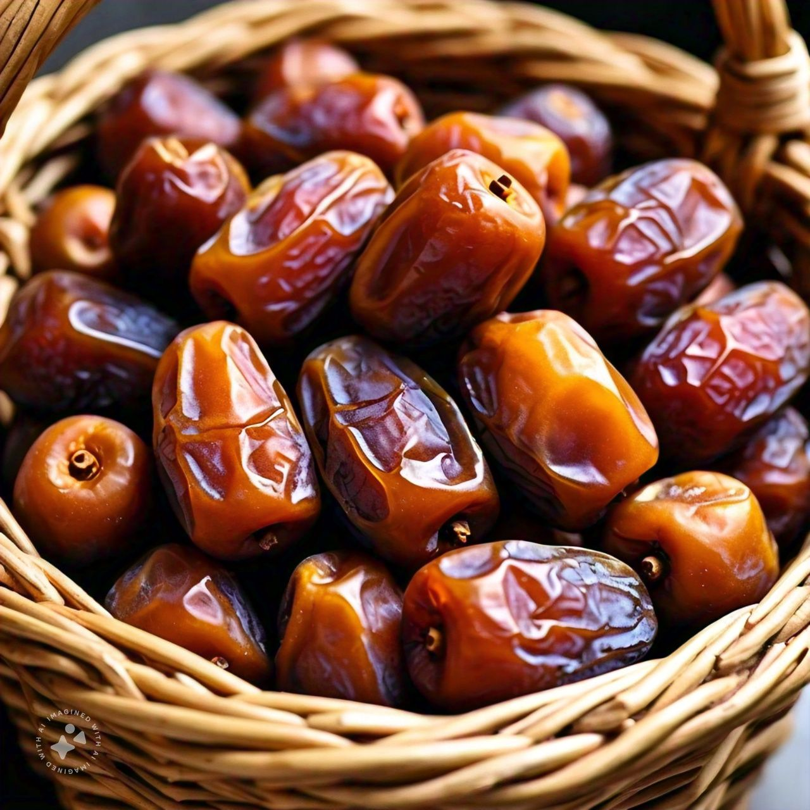

Benefits of Fruits
Apple
The apple is a popular and nutritious fruit that is enjoyed worldwide. It is the fruit of the apple tree (Malus domestica) and comes in a variety of colors, including red, green, and yellow. Apples are known for their crisp texture, juicy flavor, and numerous health benefits.
Health Benefits
- Rich in dietary fiber, which aids digestion.
- Contains antioxidants that help reduce the risk of chronic diseases.
- Low in calories, making it a great snack for weight management.
- Provides vitamins such as vitamin C and potassium.
- Learn more about apples
Banana
The banana is a tropical fruit that is widely consumed for its sweet taste and numerous health benefits. It grows on large plants belonging to the genus Musa. Bananas are one of the most popular fruits worldwide due to their convenience and versatility.
Health Benefits
- Rich in potassium, which supports heart health and blood pressure regulation.
- Provides natural energy, making it a favorite snack for athletes.
- Contains dietary fiber, which promotes healthy digestion.
- Loaded with vitamins such as vitamin B6 and vitamin C.
- Learn more about bananas
Dates
Dates are sweet fruits that grow on date palm trees (Phoenix dactylifera) and are native to the Middle East and North Africa. Known for their chewy texture and rich caramel-like taste, dates are a staple food in many cultures.
Health Benefits
- Rich in natural sugars, providing a quick energy boost.
- Contains antioxidants that help combat inflammation.
- Good source of essential minerals like potassium, magnesium, and iron.
- Promotes digestive health due to its high fiber content.
- Learn more about dates
Benefits of Other Fruits
Discover the amazing health benefits of other fruits, such as oranges, mangoes, strawberries, and more. Each fruit offers unique nutrients and contributes to a balanced diet.
Learn more about the benefits of other fruits